This exercise fits three machine learning models to the influenza data: decision tree, LASSO, and random forest. It compares the three chosen models, and then finally fits the “best” model to the test data.
The raw data for this exercise comes from the following citation: McKay, Brian et al. (2020), Virulence-mediated infectiousness and activity trade-offs and their impact on transmission potential of patients infected with influenza, Dryad, Dataset, https://doi.org/10.5061/dryad.51c59zw4v.
The processed data was produced on the Data Processing tab.
Within this analysis, the following definitions exist:
Each machine learning model will be follow this process:
tune_grid() functionThe following R packages are required for this exercise:
Load the processed data from the processed_data folder in the project file.
#path to data
#note the use of the here() package and not absolute paths
data_location <- here::here("data","flu","ML_data.rds")
#load data.
ML_processed <- readRDS(data_location)
#summary of data using skimr package
skimr::skim(ML_processed)| Name | ML_processed |
| Number of rows | 730 |
| Number of columns | 26 |
| _______________________ | |
| Column type frequency: | |
| factor | 25 |
| numeric | 1 |
| ________________________ | |
| Group variables | None |
Variable type: factor
| skim_variable | n_missing | complete_rate | ordered | n_unique | top_counts |
|---|---|---|---|---|---|
| SwollenLymphNodes | 0 | 1 | FALSE | 2 | No: 418, Yes: 312 |
| ChestCongestion | 0 | 1 | FALSE | 2 | Yes: 407, No: 323 |
| ChillsSweats | 0 | 1 | FALSE | 2 | Yes: 600, No: 130 |
| NasalCongestion | 0 | 1 | FALSE | 2 | Yes: 563, No: 167 |
| Sneeze | 0 | 1 | FALSE | 2 | Yes: 391, No: 339 |
| Fatigue | 0 | 1 | FALSE | 2 | Yes: 666, No: 64 |
| SubjectiveFever | 0 | 1 | FALSE | 2 | Yes: 500, No: 230 |
| Headache | 0 | 1 | FALSE | 2 | Yes: 615, No: 115 |
| Weakness | 0 | 1 | TRUE | 4 | Mod: 338, Mil: 223, Sev: 120, Non: 49 |
| CoughIntensity | 0 | 1 | TRUE | 4 | Mod: 357, Sev: 172, Mil: 154, Non: 47 |
| Myalgia | 0 | 1 | TRUE | 4 | Mod: 325, Mil: 213, Sev: 113, Non: 79 |
| RunnyNose | 0 | 1 | FALSE | 2 | Yes: 519, No: 211 |
| AbPain | 0 | 1 | FALSE | 2 | No: 639, Yes: 91 |
| ChestPain | 0 | 1 | FALSE | 2 | No: 497, Yes: 233 |
| Diarrhea | 0 | 1 | FALSE | 2 | No: 631, Yes: 99 |
| EyePn | 0 | 1 | FALSE | 2 | No: 617, Yes: 113 |
| Insomnia | 0 | 1 | FALSE | 2 | Yes: 415, No: 315 |
| ItchyEye | 0 | 1 | FALSE | 2 | No: 551, Yes: 179 |
| Nausea | 0 | 1 | FALSE | 2 | No: 475, Yes: 255 |
| EarPn | 0 | 1 | FALSE | 2 | No: 568, Yes: 162 |
| Pharyngitis | 0 | 1 | FALSE | 2 | Yes: 611, No: 119 |
| Breathless | 0 | 1 | FALSE | 2 | No: 436, Yes: 294 |
| ToothPn | 0 | 1 | FALSE | 2 | No: 565, Yes: 165 |
| Vomit | 0 | 1 | FALSE | 2 | No: 652, Yes: 78 |
| Wheeze | 0 | 1 | FALSE | 2 | No: 510, Yes: 220 |
Variable type: numeric
| skim_variable | n_missing | complete_rate | mean | sd | p0 | p25 | p50 | p75 | p100 | hist |
|---|---|---|---|---|---|---|---|---|---|---|
| BodyTemp | 0 | 1 | 98.94 | 1.2 | 97.2 | 98.2 | 98.5 | 99.3 | 103.1 | ▇▇▂▁▁ |
Following the parameters determined in the assignment guidelines:
123BodyTemp as stratificationBodyTemp for the CV folds#set random seed to 123
set.seed(123)
#split dataset into 70% training, 30% testing
#use BodyTemp as stratification
data_split <- rsample::initial_split(ML_processed, prop = 7/10,
strata = BodyTemp)
#create dataframes for the two sets:
train_data <- rsample::training(data_split)
test_data <- rsample::testing(data_split)
#training set proportions by BodyTemp
train_data %>%
dplyr::count(BodyTemp) %>%
dplyr::mutate(prop = n / sum(n))## BodyTemp n prop
## 1 97.3 1 0.001968504
## 2 97.4 5 0.009842520
## 3 97.5 8 0.015748031
## 4 97.6 5 0.009842520
## 5 97.7 12 0.023622047
## 6 97.8 19 0.037401575
## 7 97.9 23 0.045275591
## 8 98.0 18 0.035433071
## 9 98.1 29 0.057086614
## 10 98.2 32 0.062992126
## 11 98.3 42 0.082677165
## 12 98.4 29 0.057086614
## 13 98.5 37 0.072834646
## 14 98.6 14 0.027559055
## 15 98.7 28 0.055118110
## 16 98.8 15 0.029527559
## 17 98.9 13 0.025590551
## 18 99.0 21 0.041338583
## 19 99.1 11 0.021653543
## 20 99.2 15 0.029527559
## 21 99.3 13 0.025590551
## 22 99.4 10 0.019685039
## 23 99.5 8 0.015748031
## 24 99.6 3 0.005905512
## 25 99.7 6 0.011811024
## 26 99.8 5 0.009842520
## 27 99.9 9 0.017716535
## 28 100.0 5 0.009842520
## 29 100.1 4 0.007874016
## 30 100.2 5 0.009842520
## 31 100.3 4 0.007874016
## 32 100.4 5 0.009842520
## 33 100.5 3 0.005905512
## 34 100.6 2 0.003937008
## 35 100.8 1 0.001968504
## 36 100.9 7 0.013779528
## 37 101.0 1 0.001968504
## 38 101.1 3 0.005905512
## 39 101.2 3 0.005905512
## 40 101.3 1 0.001968504
## 41 101.5 1 0.001968504
## 42 101.6 2 0.003937008
## 43 101.7 3 0.005905512
## 44 101.8 1 0.001968504
## 45 101.9 3 0.005905512
## 46 102.0 2 0.003937008
## 47 102.1 1 0.001968504
## 48 102.2 2 0.003937008
## 49 102.4 1 0.001968504
## 50 102.5 1 0.001968504
## 51 102.6 2 0.003937008
## 52 102.7 2 0.003937008
## 53 102.8 4 0.007874016
## 54 103.0 6 0.011811024
## 55 103.1 2 0.003937008#testing set proportions by BodyTemp
test_data %>%
dplyr::count(BodyTemp) %>%
dplyr::mutate(prop = n / sum(n))## BodyTemp n prop
## 1 97.2 2 0.009009009
## 2 97.4 2 0.009009009
## 3 97.5 1 0.004504505
## 4 97.6 2 0.009009009
## 5 97.7 2 0.009009009
## 6 97.8 4 0.018018018
## 7 97.9 6 0.027027027
## 8 98.0 12 0.054054054
## 9 98.1 17 0.076576577
## 10 98.2 18 0.081081081
## 11 98.3 20 0.090090090
## 12 98.4 11 0.049549550
## 13 98.5 16 0.072072072
## 14 98.6 13 0.058558559
## 15 98.7 7 0.031531532
## 16 98.8 9 0.040540541
## 17 98.9 10 0.045045045
## 18 99.0 4 0.018018018
## 19 99.1 4 0.018018018
## 20 99.2 5 0.022522523
## 21 99.3 5 0.022522523
## 22 99.4 1 0.004504505
## 23 99.5 6 0.027027027
## 24 99.6 3 0.013513514
## 25 99.7 5 0.022522523
## 26 99.8 1 0.004504505
## 27 99.9 1 0.004504505
## 28 100.0 2 0.009009009
## 29 100.1 3 0.013513514
## 30 100.2 3 0.013513514
## 31 100.3 1 0.004504505
## 32 100.4 2 0.009009009
## 33 100.5 2 0.009009009
## 34 100.6 2 0.009009009
## 35 100.8 1 0.004504505
## 36 100.9 2 0.009009009
## 37 101.0 1 0.004504505
## 38 101.2 1 0.004504505
## 39 101.5 1 0.004504505
## 40 101.8 3 0.013513514
## 41 101.9 3 0.013513514
## 42 102.1 1 0.004504505
## 43 102.2 1 0.004504505
## 44 102.4 1 0.004504505
## 45 102.5 1 0.004504505
## 46 102.6 1 0.004504505
## 47 102.8 1 0.004504505
## 48 102.9 1 0.004504505
## 49 103.0 1 0.004504505#5-fold cross validation, 5 times repeated, stratified on `BodyTemp` for the CV folds
folds <- rsample::vfold_cv(train_data,
v = 5,
repeats = 5,
strata = BodyTemp)
#create recipe that codes categorical variables as dummy variables
flu_rec <- recipes::recipe(BodyTemp ~ ., data = train_data) %>%
recipes::step_dummy(all_nominal_predictors())Determine the performance of a null model (i.e. one with no predictors). For a continuous outcome and RMSE as the metric, a null model is one that predicts the mean of the outcome. Compute the RMSE for both training and test data for such a model.
#create null model
null_mod <- parsnip::null_model() %>%
parsnip::set_engine("parsnip") %>%
parsnip::set_mode("regression")
#add recipe and model into workflow
null_wflow <- workflows::workflow() %>%
workflows::add_recipe(flu_rec) %>%
workflows::add_model(null_mod)
#"fit" model to training data
null_train <- null_wflow %>%
parsnip::fit(data = train_data)
#summary of null model with training data to get mean (which in this case is the RMSE)
null_train_sum <- broom.mixed::tidy(null_train)
null_train_sum## # A tibble: 1 x 1
## value
## <dbl>
## 1 98.9#"fit" model to test data
null_test <- null_wflow %>%
parsnip::fit(data = test_data)
#summary of null model with test data to get mean (which in this case is the RMSE)
null_test_sum <- broom.mixed::tidy(null_test)
null_test_sum## # A tibble: 1 x 1
## value
## <dbl>
## 1 98.9#RMSE for training data
null_RMSE_train <- tibble::tibble(
rmse = rmse_vec(truth = train_data$BodyTemp,
estimate = rep(mean(train_data$BodyTemp), nrow(train_data))),
SE = 0,
model = "Null - Train")
#RMSE for testing data
null_RMSE_test <- tibble::tibble(
rmse = rmse_vec(truth = test_data$BodyTemp,
estimate = rep(mean(test_data$BodyTemp), nrow(test_data))),
SE = 0,
model = "Null - Test")Most of the code for this section comes from the TidyModels Tutorial for Tuning.
#run parallels to determine number of cores
cores <- parallel::detectCores() - 1
cores## [1] 19cl <- makeCluster(cores)
registerDoParallel(cl)
#define the tree model
tree_mod <-
parsnip::decision_tree(cost_complexity = tune(),
tree_depth = tune(),
min_n = tune()) %>%
parsnip::set_engine("rpart") %>%
parsnip::set_mode("regression")
#use the recipe specified earlier (line 133)#define workflow for tree
tree_wflow <- workflows::workflow() %>%
workflows::add_model(tree_mod) %>%
workflows::add_recipe(flu_rec)#tuning grid specification
tree_grid <- dials::grid_regular(cost_complexity(),
tree_depth(),
min_n(),
levels = 5)
#tree depth
tree_grid %>%
dplyr::count(tree_depth)## # A tibble: 5 x 2
## tree_depth n
## <int> <int>
## 1 1 25
## 2 4 25
## 3 8 25
## 4 11 25
## 5 15 25tune_grid() function#tune the model with previously specified cross-validation and RMSE as target metric
tree_res <- tree_wflow %>%
tune::tune_grid(resamples = folds,
grid = tree_grid,
control = control_grid(verbose = TRUE),
metrics = yardstick::metric_set(rmse))
#collect metrics
tree_res %>% workflowsets::collect_metrics()## # A tibble: 125 x 9
## cost_complexity tree_depth min_n .metric .estimator mean n std_err
## <dbl> <int> <int> <chr> <chr> <dbl> <int> <dbl>
## 1 0.0000000001 1 2 rmse standard 1.19 25 0.0181
## 2 0.0000000178 1 2 rmse standard 1.19 25 0.0181
## 3 0.00000316 1 2 rmse standard 1.19 25 0.0181
## 4 0.000562 1 2 rmse standard 1.19 25 0.0181
## 5 0.1 1 2 rmse standard 1.21 25 0.0177
## 6 0.0000000001 4 2 rmse standard 1.24 25 0.0204
## 7 0.0000000178 4 2 rmse standard 1.24 25 0.0204
## 8 0.00000316 4 2 rmse standard 1.24 25 0.0204
## 9 0.000562 4 2 rmse standard 1.23 25 0.0205
## 10 0.1 4 2 rmse standard 1.21 25 0.0177
## # ... with 115 more rows, and 1 more variable: .config <chr>#default visualization
tree_res %>% autoplot()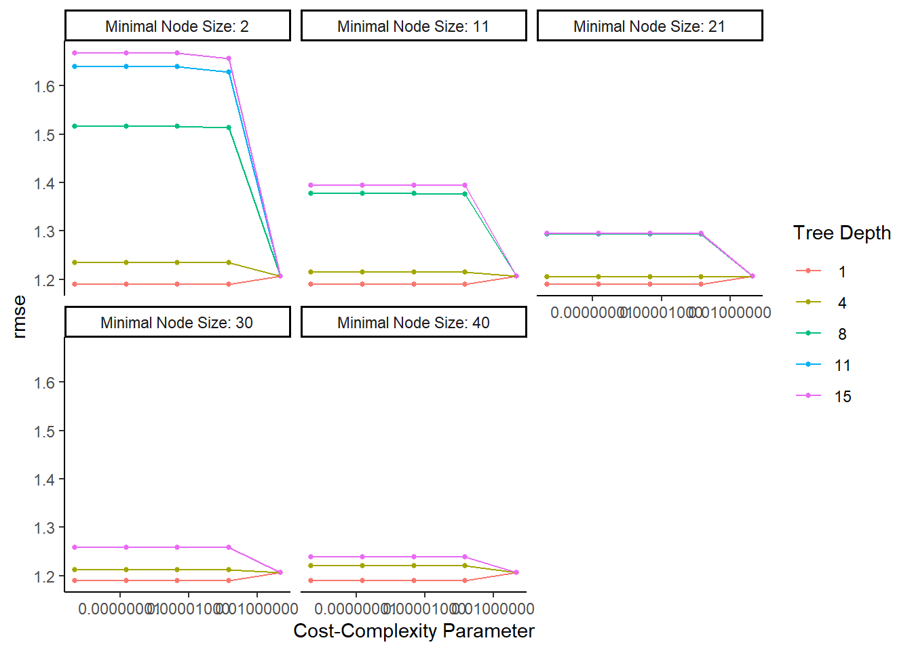
#more detailed plot
tree_res %>%
workflowsets::collect_metrics() %>%
dplyr::mutate(tree_depth = factor(tree_depth)) %>%
ggplot2::ggplot(aes(cost_complexity, mean, color = tree_depth)) +
geom_line(size = 1.5, alpha = 0.6) +
geom_point(size = 2) +
facet_wrap(~ .metric, scales = "free", nrow = 2) +
scale_x_log10(labels = scales::label_number()) +
scale_color_viridis_d(option = "plasma", begin = 0.9, end = 0)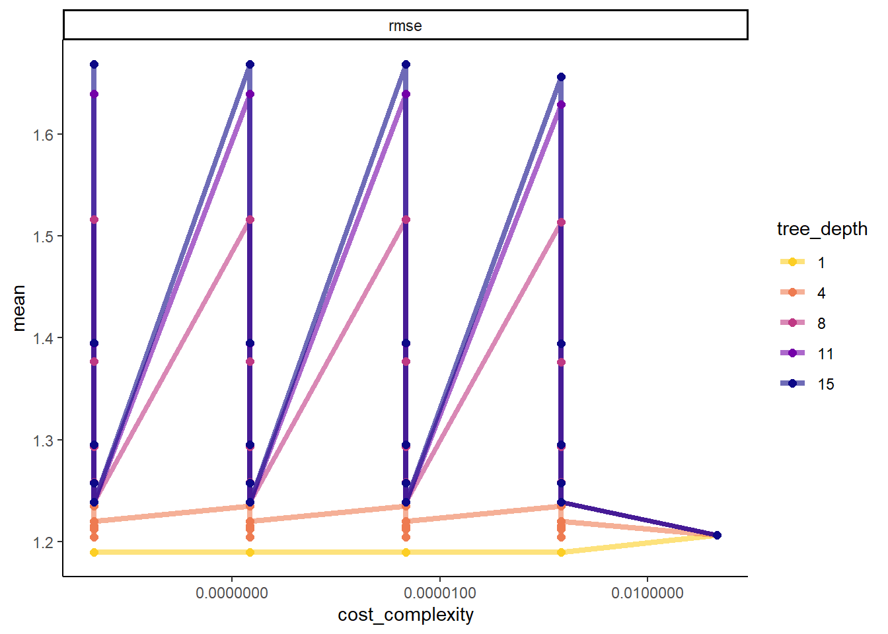
#select the tree model with the lowest rmse
tree_lowest_rmse <- tree_res %>%
tune::select_best("rmse")
#finalize the workflow by using the selected lasso model
best_tree_wflow <- tree_wflow %>%
tune::finalize_workflow(tree_lowest_rmse)
best_tree_wflow## == Workflow ====================================================================
## Preprocessor: Recipe
## Model: decision_tree()
##
## -- Preprocessor ----------------------------------------------------------------
## 1 Recipe Step
##
## * step_dummy()
##
## -- Model -----------------------------------------------------------------------
## Decision Tree Model Specification (regression)
##
## Main Arguments:
## cost_complexity = 0.0000000001
## tree_depth = 1
## min_n = 2
##
## Computational engine: rpart#one last fit on the training data
best_tree_fit <- best_tree_wflow %>%
parsnip::fit(data = train_data)#plot the tree
rpart.plot::rpart.plot(x = workflowsets::extract_fit_parsnip(best_tree_fit)$fit,
roundint = F,
type = 5,
digits = 5,
main = "Selected Tree Model")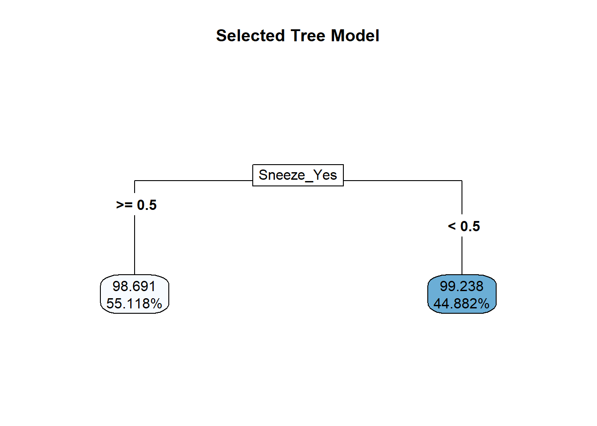
#find predictions and intervals
tree_resid <- best_tree_fit %>%
broom.mixed::augment(new_data = train_data) %>%
dplyr::select(.pred, BodyTemp) %>%
dplyr::mutate(.resid = .pred - BodyTemp)
#plot model predictions from tuned model versus actual outcomes
#geom_abline draws a 45 degree line, along which the results should fall
ggplot2::ggplot(tree_resid, aes(x = .pred, y = BodyTemp)) +
geom_abline(slope = 1, intercept = 0, color = "red", lty = 2) +
geom_point() +
xlim(97, 104) +
ylim (97, 104) +
labs(title = "Decision Tree Fit: Predicted vs. Actual Body Temperature",
x = "Predicted Body Temperature (F)",
y = "Actual Body Temperature (F)")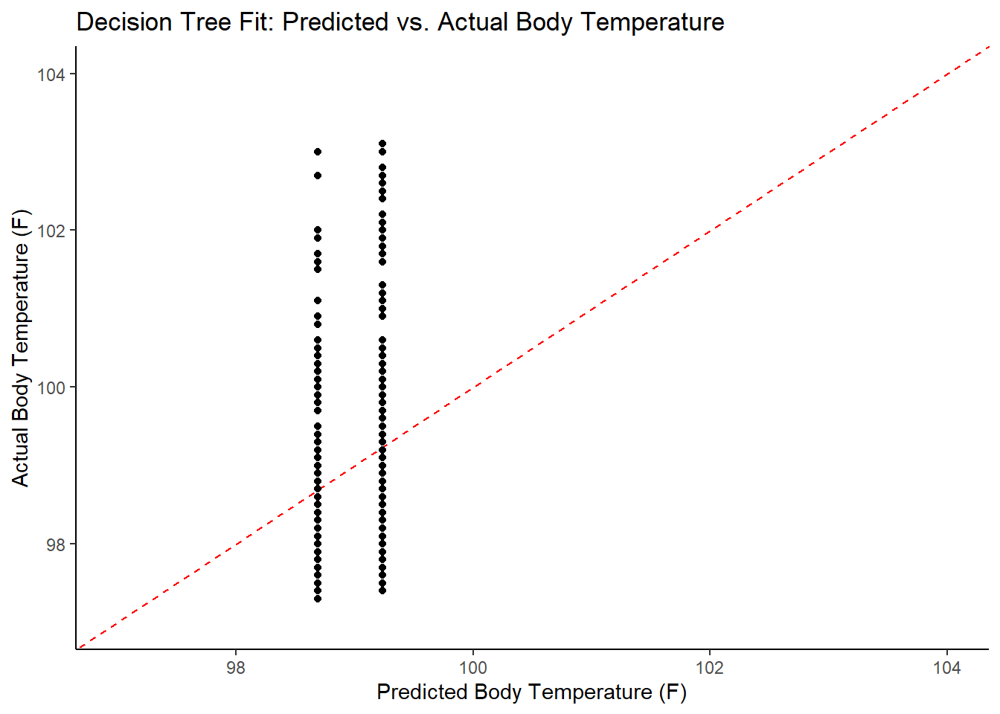
#plot model with residuals
#the geom_hline plots a straight horizontal line along which the results should fall
ggplot2::ggplot(tree_resid, aes(x = as.numeric(row.names(tree_resid)), y = .resid))+
geom_hline(yintercept = 0, color = "red", lty = 2) +
geom_point() +
labs(title = "Decision Tree Fit: Residuals",
x = "Observation Number",
y = "Residual")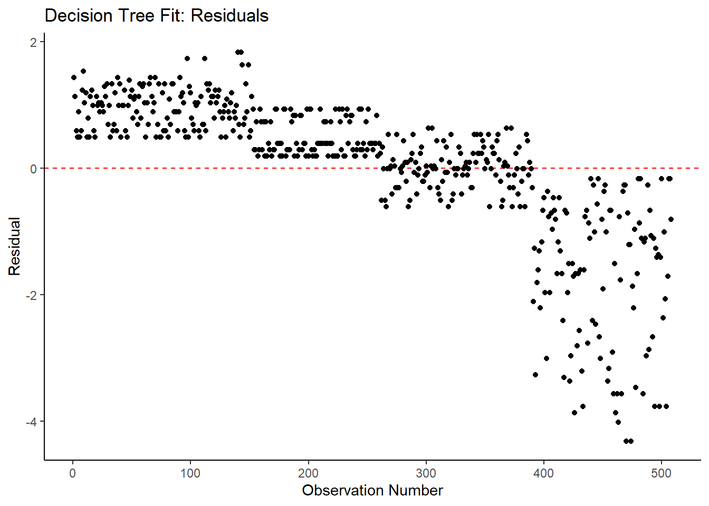
#plot model fit vs residuals
#the geom_hline plots a straight horizontal line along which the results fall
ggplot2::ggplot(tree_resid, aes(x = .pred, y = .resid))+
geom_hline(yintercept = 0, color = "red", lty = 2) +
geom_point() +
xlim(97, 104) +
labs(title = "Decision Tree Fit: Residuals vs Fitted Body Temperature",
x = "Fitted Body Temperature (F)",
y = "Residual")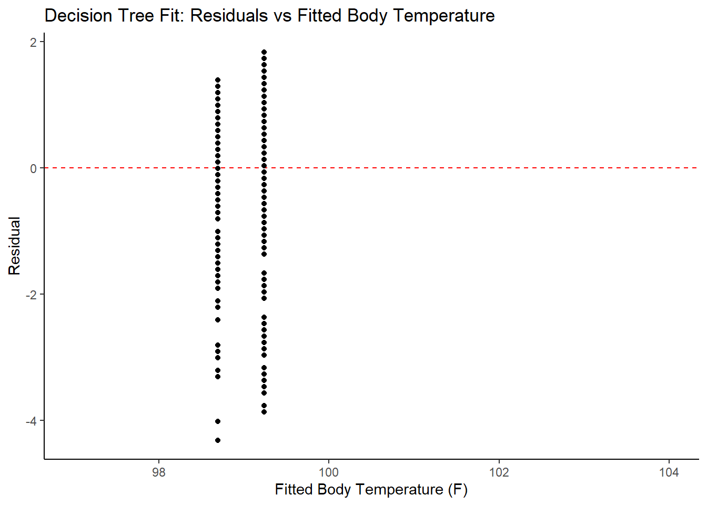
#print model performance
#print 10 best performing hyperparameter sets
tree_res %>%
tune::show_best(n = 10) %>%
dplyr::select(rmse = mean, std_err, cost_complexity) %>%
dplyr::mutate(rmse = round(rmse, 3),
std_err = round(std_err, 4),
cost_complexity = scales::scientific(cost_complexity))## # A tibble: 10 x 3
## rmse std_err cost_complexity
## <dbl> <dbl> <chr>
## 1 1.19 0.0181 1.00e-10
## 2 1.19 0.0181 1.78e-08
## 3 1.19 0.0181 3.16e-06
## 4 1.19 0.0181 5.62e-04
## 5 1.19 0.0181 1.00e-10
## 6 1.19 0.0181 1.78e-08
## 7 1.19 0.0181 3.16e-06
## 8 1.19 0.0181 5.62e-04
## 9 1.19 0.0181 1.00e-10
## 10 1.19 0.0181 1.78e-08#print the best model performance
tree_performance <- tree_res %>% tune::show_best(n = 1)
print(tree_performance)## # A tibble: 1 x 9
## cost_complexity tree_depth min_n .metric .estimator mean n std_err
## <dbl> <int> <int> <chr> <chr> <dbl> <int> <dbl>
## 1 0.0000000001 1 2 rmse standard 1.19 25 0.0181
## # ... with 1 more variable: .config <chr>#compare model performance to null model
tree_RMSE <- tree_res %>%
tune::show_best(n = 1) %>%
dplyr::transmute(
rmse = round(mean, 3),
SE = round(std_err, 4),
model = "Tree") %>%
dplyr::bind_rows(null_RMSE_train)
tree_RMSE## # A tibble: 2 x 3
## rmse SE model
## <dbl> <dbl> <chr>
## 1 1.19 0.0181 Tree
## 2 1.21 0 Null - TrainThe identified best performing tree model only predicts two different values, which isn’t a great model. In comparing the RMSE to the null model, it is a marginal improvement at best. This is not a good model for this data – time to try something new!
Most of the code for this section comes from the TidyModels Tutorial Case Study.
#define the lasso model
#mixture = 1 identifies the model to be a LASSO model
lasso_mod <-
parsnip::linear_reg(mode = "regression",
penalty = tune(),
mixture = 1) %>%
parsnip::set_engine("glmnet")
#use the recipe specified earlier (line 133)#define workflow for lasso regression
lasso_wflow <- workflows::workflow() %>%
workflows::add_model(lasso_mod) %>%
workflows::add_recipe(flu_rec)#tuning grid specification
lasso_grid <- tibble(penalty = 10^seq(-3, 0, length.out = 30))
#5 lowest penalty values
lasso_grid %>%
dplyr::top_n(-5)## Selecting by penalty## # A tibble: 5 x 1
## penalty
## <dbl>
## 1 0.001
## 2 0.00127
## 3 0.00161
## 4 0.00204
## 5 0.00259#5 highest penalty values
lasso_grid %>%
dplyr::top_n(5)## Selecting by penalty## # A tibble: 5 x 1
## penalty
## <dbl>
## 1 0.386
## 2 0.489
## 3 0.621
## 4 0.788
## 5 1tune_grid() function#tune the model with previously specified cross-validation and RMSE as target metric
lasso_res <- lasso_wflow %>%
tune::tune_grid(resamples = folds,
grid = lasso_grid,
control = control_grid(verbose = TRUE,
save_pred = TRUE),
metrics = metric_set(rmse))
#look at 15 models with lowest RMSEs
top_lasso_models <- lasso_res %>%
tune::show_best("rmse", n = 15) %>%
dplyr::arrange(penalty)
top_lasso_models## # A tibble: 15 x 7
## penalty .metric .estimator mean n std_err .config
## <dbl> <chr> <chr> <dbl> <int> <dbl> <chr>
## 1 0.00530 rmse standard 1.17 25 0.0167 Preprocessor1_Model08
## 2 0.00672 rmse standard 1.17 25 0.0167 Preprocessor1_Model09
## 3 0.00853 rmse standard 1.17 25 0.0167 Preprocessor1_Model10
## 4 0.0108 rmse standard 1.17 25 0.0167 Preprocessor1_Model11
## 5 0.0137 rmse standard 1.16 25 0.0167 Preprocessor1_Model12
## 6 0.0174 rmse standard 1.16 25 0.0167 Preprocessor1_Model13
## 7 0.0221 rmse standard 1.16 25 0.0168 Preprocessor1_Model14
## 8 0.0281 rmse standard 1.16 25 0.0169 Preprocessor1_Model15
## 9 0.0356 rmse standard 1.15 25 0.0169 Preprocessor1_Model16
## 10 0.0452 rmse standard 1.15 25 0.0169 Preprocessor1_Model17
## 11 0.0574 rmse standard 1.15 25 0.0169 Preprocessor1_Model18
## 12 0.0728 rmse standard 1.15 25 0.0170 Preprocessor1_Model19
## 13 0.0924 rmse standard 1.16 25 0.0172 Preprocessor1_Model20
## 14 0.117 rmse standard 1.16 25 0.0175 Preprocessor1_Model21
## 15 0.149 rmse standard 1.17 25 0.0178 Preprocessor1_Model22#default visualization
lasso_res %>% autoplot()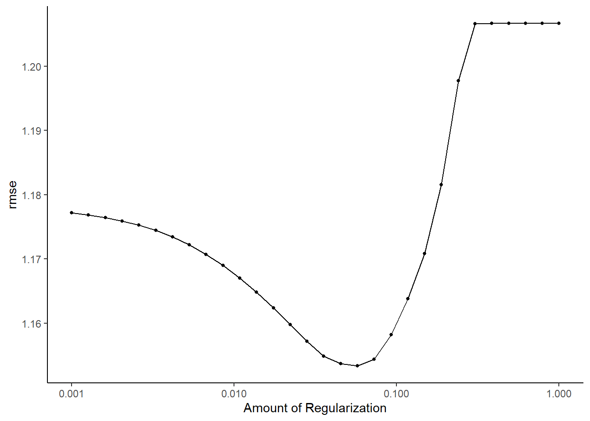
#create a graph to see when there is a significant change in the penalty
#this is the same as above, just a little more detail
lasso_res %>%
workflowsets::collect_metrics() %>%
ggplot2::ggplot(aes(penalty, mean, color = .metric)) +
ggplot2::geom_errorbar(aes(ymin = mean - std_err,
ymax = mean + std_err),
alpha = 0.5) +
ggplot2::geom_line(size = 1.5) +
ggplot2::scale_x_log10()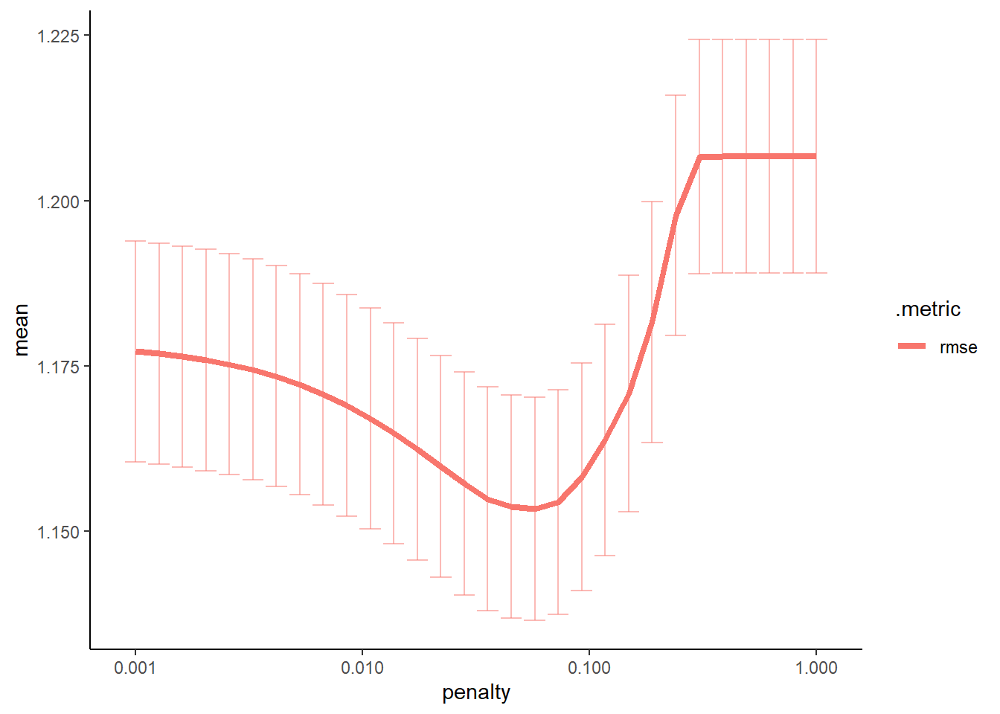
#select the lasso model with the lowest rmse
lasso_lowest_rmse <- lasso_res %>%
tune::select_best("rmse")
#finalize the workflow by using the selected lasso model
best_lasso_wflow <- lasso_wflow %>%
tune::finalize_workflow(lasso_lowest_rmse)
best_lasso_wflow## == Workflow ====================================================================
## Preprocessor: Recipe
## Model: linear_reg()
##
## -- Preprocessor ----------------------------------------------------------------
## 1 Recipe Step
##
## * step_dummy()
##
## -- Model -----------------------------------------------------------------------
## Linear Regression Model Specification (regression)
##
## Main Arguments:
## penalty = 0.0573615251044868
## mixture = 1
##
## Computational engine: glmnet#one last fit on the training data
best_lasso_fit <- best_lasso_wflow %>%
parsnip::fit(data = train_data)
#create a table of model fit that includes the predictors in the model
#i.e. include all non-zero estimates
lasso_tibble <- best_lasso_fit %>%
workflowsets::extract_fit_parsnip() %>%
broom::tidy() %>%
dplyr::filter(estimate != 0) %>%
dplyr::mutate_if(is.numeric, round, 4)
lasso_tibble## # A tibble: 13 x 3
## term estimate penalty
## <chr> <dbl> <dbl>
## 1 (Intercept) 98.7 0.0574
## 2 ChestCongestion_Yes 0.0332 0.0574
## 3 ChillsSweats_Yes 0.0894 0.0574
## 4 NasalCongestion_Yes -0.140 0.0574
## 5 Sneeze_Yes -0.391 0.0574
## 6 Fatigue_Yes 0.178 0.0574
## 7 SubjectiveFever_Yes 0.378 0.0574
## 8 Weakness_1 0.178 0.0574
## 9 Myalgia_2 -0.0099 0.0574
## 10 Myalgia_3 0.0679 0.0574
## 11 RunnyNose_Yes -0.0825 0.0574
## 12 Nausea_Yes 0.0035 0.0574
## 13 Pharyngitis_Yes 0.148 0.0574#extract model from final fit
x_lasso <- best_lasso_fit$fit$fit$fit
#plot how number of predictors included in LASSO model changes with the tuning parameter
plot(x_lasso, "lambda")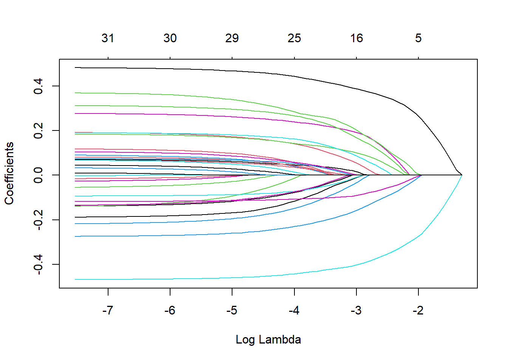
#the larger the regularization penalty, the fewer the predictors in the model
#find predictions and intervals
lasso_resid <- best_lasso_fit %>%
broom.mixed::augment(new_data = train_data) %>%
dplyr::select(.pred, BodyTemp) %>%
dplyr::mutate(.resid = .pred - BodyTemp)
#plot model predictions from tuned model versus actual outcomes
#geom_abline plots a 45 degree line along which the results should fall
ggplot2::ggplot(lasso_resid, aes(x = .pred, y = BodyTemp)) +
geom_abline(slope = 1, intercept = 0, color = "red", lty = 2) +
geom_point() +
xlim(97, 104) +
ylim(97, 104) +
labs(title = "LASSO fit: Predicted vs. Actual Body Temperature",
x = "Actual Body Temperature (F)",
y = "Predicted Body Temperature (F)")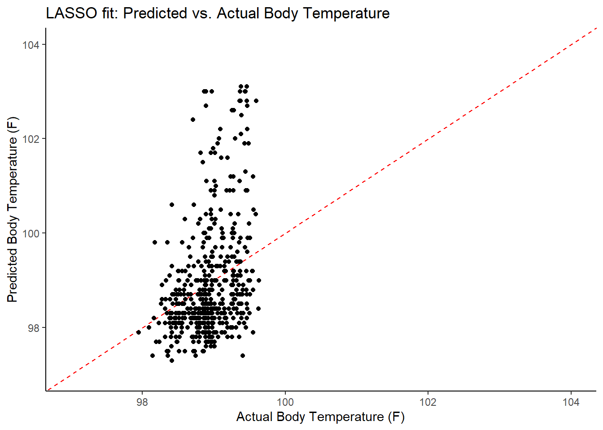
#plot model with residuals
#the geom_hline plots a straight horizontal line along which the results should fall
ggplot2::ggplot(lasso_resid, aes(x = as.numeric(row.names(lasso_resid)), y = .resid))+
geom_hline(yintercept = 0, color = "red", lty = 2) +
geom_point() +
labs(title = "LASSO Fit: Residuals",
x = "Observation Number",
y = "Residual")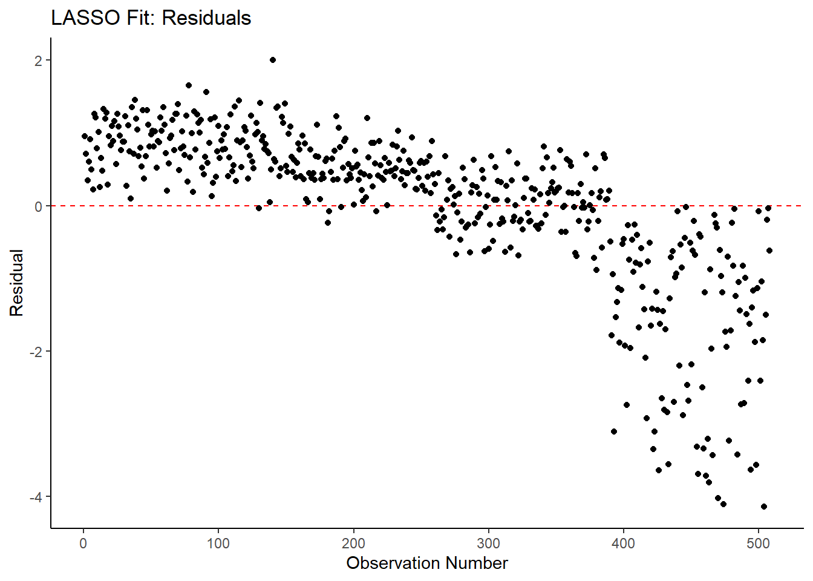
#plot model fit vs residuals
#the geom_hline plots a straight horizontal line along which the results fall
ggplot2::ggplot(lasso_resid, aes(x = .pred, y = .resid))+
geom_hline(yintercept = 0, color = "red", lty = 2) +
geom_point() +
xlim(97, 104) +
labs(title = "LASSO Fit: Residuals vs Fitted Body Temperature",
x = "Fitted Body Temperature (F)",
y = "Residual")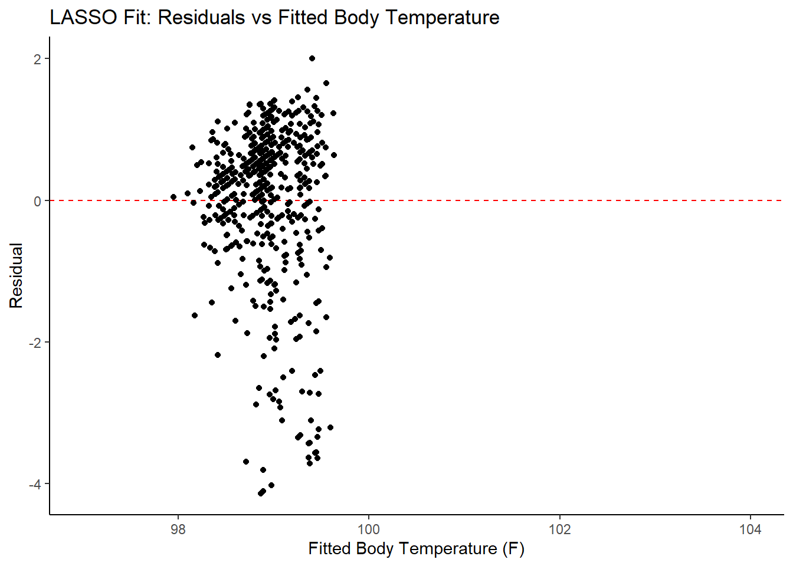
#print the 10 best performing hyperparameter sets
lasso_res %>%
tune::show_best(n = 10) %>%
dplyr::select(rmse = mean, std_err, penalty) %>%
dplyr::mutate(rmse = round(rmse, 3),
std_err = round(std_err, 4),
`log penalty` = round(log(penalty), 3),
.keep = "unused")## # A tibble: 10 x 3
## rmse std_err `log penalty`
## <dbl> <dbl> <dbl>
## 1 1.15 0.0169 -2.86
## 2 1.15 0.0169 -3.10
## 3 1.15 0.017 -2.62
## 4 1.16 0.0169 -3.34
## 5 1.16 0.0169 -3.57
## 6 1.16 0.0172 -2.38
## 7 1.16 0.0168 -3.81
## 8 1.16 0.0167 -4.05
## 9 1.16 0.0175 -2.14
## 10 1.16 0.0167 -4.29#print best model performance
lasso_performance <- lasso_res %>% tune::show_best(n = 1)
lasso_performance## # A tibble: 1 x 7
## penalty .metric .estimator mean n std_err .config
## <dbl> <chr> <chr> <dbl> <int> <dbl> <chr>
## 1 0.0574 rmse standard 1.15 25 0.0169 Preprocessor1_Model18#compare model performance to null model and tree model
lasso_RMSE <- lasso_res %>%
tune::show_best(n = 1) %>%
dplyr::transmute(
rmse = round(mean, 3),
SE = round(std_err, 4),
model = "LASSO") %>%
dplyr::bind_rows(tree_RMSE)
lasso_RMSE## # A tibble: 3 x 3
## rmse SE model
## <dbl> <dbl> <chr>
## 1 1.15 0.0169 LASSO
## 2 1.19 0.0181 Tree
## 3 1.21 0 Null - TrainIn examining the results of the model, there is an improvement of the target metric (RMSE) under the LASSO model. However, the residual plots and observed vs fitted plots suggest the fit still isn’t ideal. Time to try one last model!
Most of the code for this section comes from the TidyModels Tutorial Case Study.
#run parallels to determine number of cores
cores <- parallel::detectCores() - 1
cores## [1] 19cl <- makeCluster(cores)
registerDoParallel(cl)
#define the RF model
RF_mod <-
parsnip::rand_forest(mtry = tune(),
min_n = tune(),
trees = tune()) %>%
parsnip::set_engine("ranger",
importance = "permutation") %>%
parsnip::set_mode("regression")
#use the recipe specified earlier (line 133)
#check to make sure identified parameters will be tuned
RF_mod %>% tune::parameters()## Collection of 3 parameters for tuning
##
## identifier type object
## mtry mtry nparam[?]
## trees trees nparam[+]
## min_n min_n nparam[+]
##
## Model parameters needing finalization:
## # Randomly Selected Predictors ('mtry')
##
## See `?dials::finalize` or `?dials::update.parameters` for more information.#define workflow for RF regression
RF_wflow <- workflows::workflow() %>%
workflows::add_model(RF_mod) %>%
workflows::add_recipe(flu_rec)#tuning grid specification
RF_grid <- expand.grid(mtry = c(3, 4, 5, 6),
min_n = c(40, 50, 60),
trees = c(500,1000))tune_grid() function#tune the model with previously specified cross-validation and RMSE as target metric
RF_res <- RF_wflow %>%
tune::tune_grid(resamples = folds,
grid = RF_grid,
control = control_grid(verbose = TRUE, save_pred = TRUE),
metrics = metric_set(rmse))
#look at top 5 RF models
top_RF_models <- RF_res %>%
tune::show_best("rmse", n = 5)
top_RF_models## # A tibble: 5 x 9
## mtry trees min_n .metric .estimator mean n std_err .config
## <dbl> <dbl> <dbl> <chr> <chr> <dbl> <int> <dbl> <chr>
## 1 6 1000 60 rmse standard 1.16 25 0.0168 Preprocessor1_Model24
## 2 6 500 60 rmse standard 1.16 25 0.0170 Preprocessor1_Model12
## 3 6 1000 50 rmse standard 1.16 25 0.0167 Preprocessor1_Model20
## 4 5 1000 60 rmse standard 1.16 25 0.0168 Preprocessor1_Model23
## 5 5 500 60 rmse standard 1.16 25 0.0166 Preprocessor1_Model11#default visualization
RF_res %>% autoplot()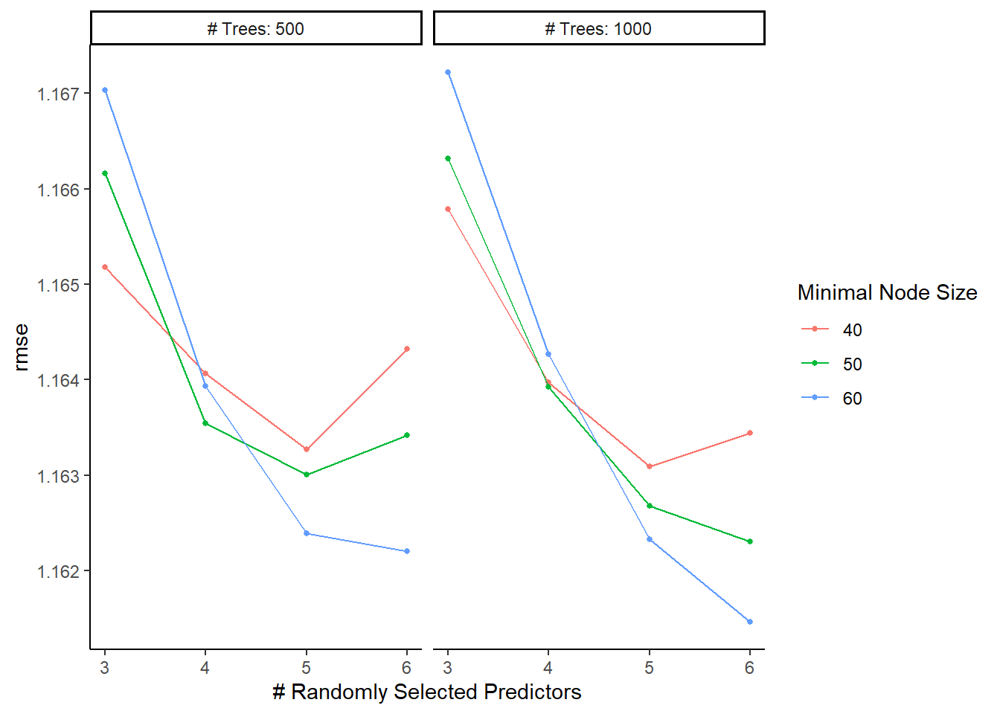
#in future analyses, might be worth more tuning with a higher minimum node size#select the RF model with the lowest rmse
RF_lowest_rmse <- RF_res %>%
tune::select_best("rmse")
#finalize the workflow by using the selected RF model
best_RF_wflow <- RF_wflow %>%
tune::finalize_workflow(RF_lowest_rmse)
best_RF_wflow## == Workflow ====================================================================
## Preprocessor: Recipe
## Model: rand_forest()
##
## -- Preprocessor ----------------------------------------------------------------
## 1 Recipe Step
##
## * step_dummy()
##
## -- Model -----------------------------------------------------------------------
## Random Forest Model Specification (regression)
##
## Main Arguments:
## mtry = 6
## trees = 1000
## min_n = 60
##
## Engine-Specific Arguments:
## importance = permutation
##
## Computational engine: ranger#one last fit on the training data
best_RF_fit <- best_RF_wflow %>%
parsnip::fit(data = train_data)#extract model from final fit
x_RF <- best_RF_fit$fit$fit$fit
#plot most important predictors in the model
vip::vip(x_RF, num_features = 20)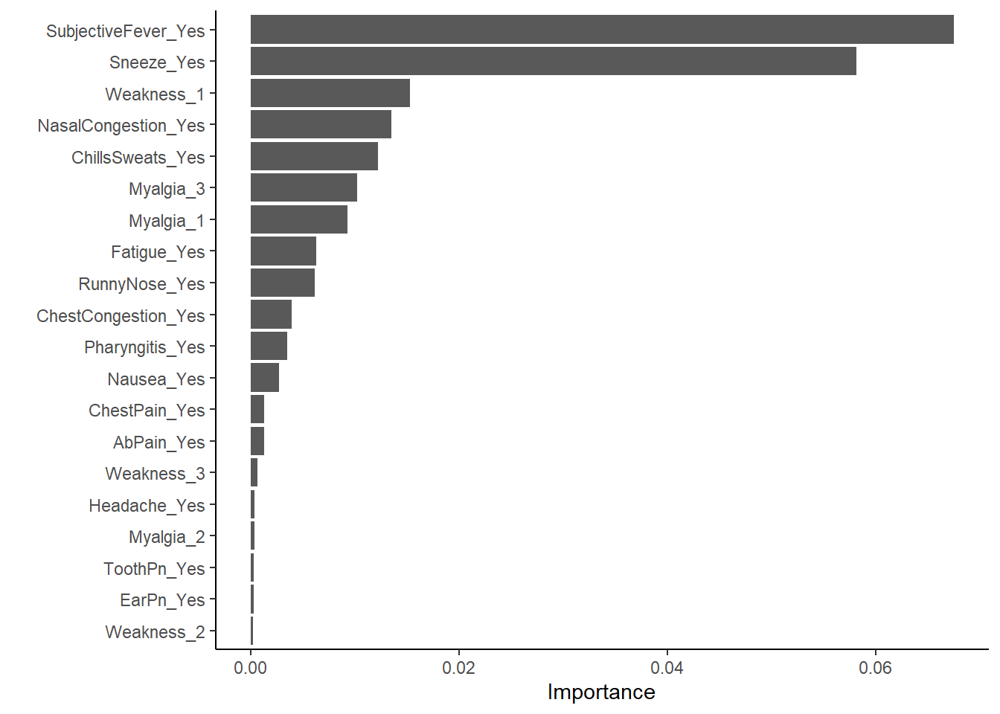
#makes sense subjective fever is the most important variable in predicting actual fever
#find predictions and intervals
RF_resid <- best_RF_fit %>%
broom.mixed::augment(new_data = train_data) %>%
dplyr::select(.pred, BodyTemp) %>%
dplyr::mutate(.resid = .pred - BodyTemp)
#plot model predictions from tuned model versus actual outcomes
#geom_abline is a 45 degree line, along which the results should fall
ggplot2::ggplot(RF_resid, aes(x = .pred, y = BodyTemp)) +
geom_abline(slope = 1, intercept = 0, color = "red", lty = 2) +
geom_point() +
xlim(97, 104) +
ylim(97, 104) +
labs(title = "RF Fit: Actual vs. Predicted Body Temperature",
x = "Predicted Body Temperature (F)",
y = "Actual Body Temperature (F)")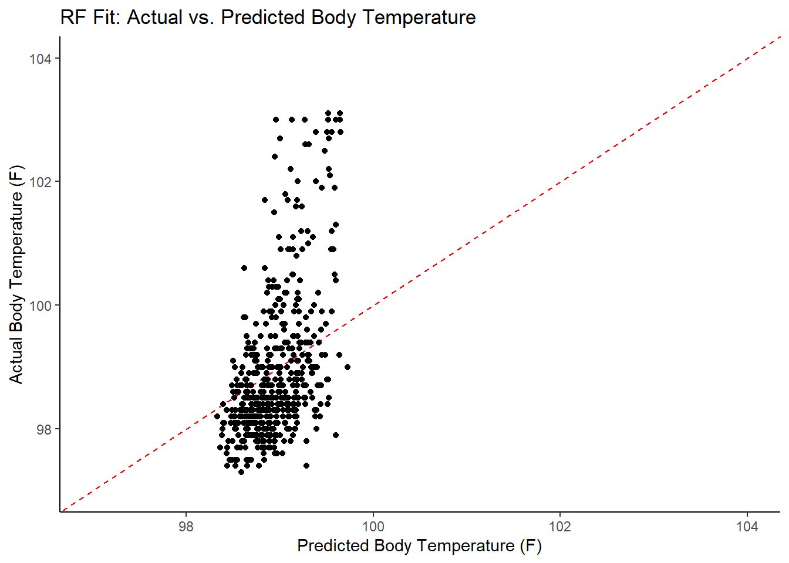
#plot model with residuals
#the geom_hline plots a straight horizontal line along which the results should fall
ggplot2::ggplot(RF_resid, aes(x = as.numeric(row.names(RF_resid)), y = .resid))+
geom_hline(yintercept = 0, color = "red", lty = 2) +
geom_point() +
labs(title = "RF Fit: Residuals",
x = "Observation Number",
y = "Residual")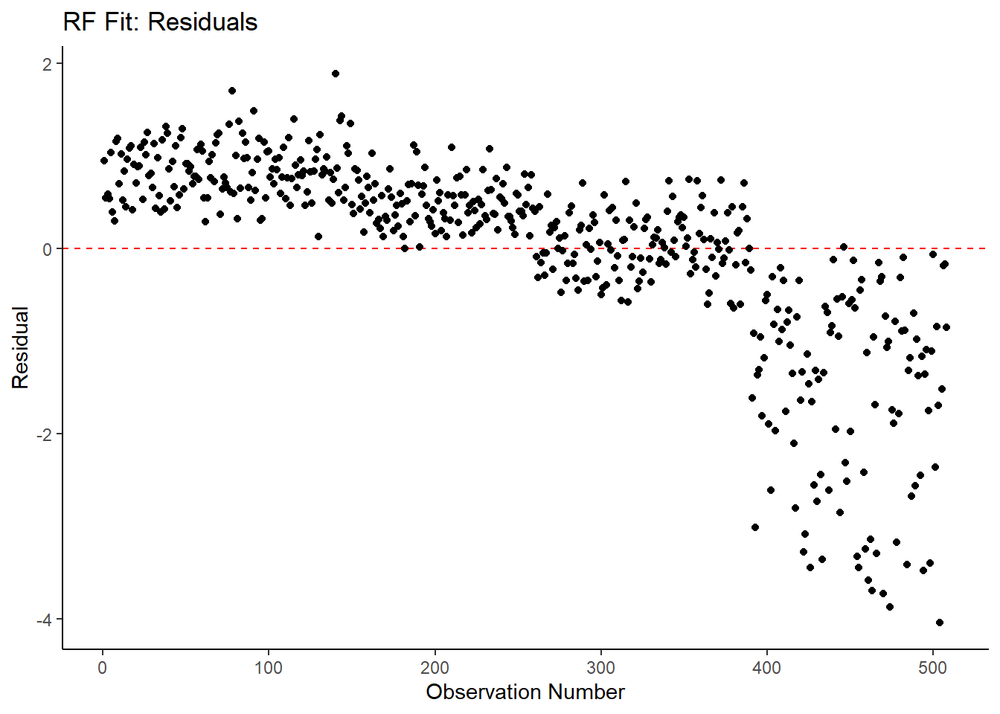
#plot model fit vs residuals
#the geom_hline plots a straight horizontal line along which the results fall
ggplot2::ggplot(RF_resid, aes(x = .pred, y = .resid))+
geom_hline(yintercept = 0, color = "red", lty = 2) +
geom_point() +
xlim(97, 104) +
labs(title = "LASSO Fit: Residuals vs Fitted Body Temperature",
x = "Fitted Body Temperature (F)",
y = "Residual")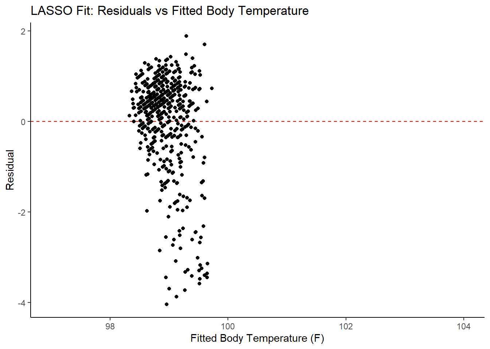
#print the 10 best performing hyperparameter sets
RF_res %>%
tune::show_best(n = 10) %>%
dplyr::select(rmse = mean, std_err) %>%
dplyr::mutate(rmse = round(rmse, 3),
std_err = round(std_err, 4),
.keep = "unused")## # A tibble: 10 x 2
## rmse std_err
## <dbl> <dbl>
## 1 1.16 0.0168
## 2 1.16 0.017
## 3 1.16 0.0167
## 4 1.16 0.0168
## 5 1.16 0.0166
## 6 1.16 0.0167
## 7 1.16 0.0169
## 8 1.16 0.0166
## 9 1.16 0.0167
## 10 1.16 0.0166#print the best model
RF_performance <- RF_res %>% tune::show_best(n = 1)
RF_performance## # A tibble: 1 x 9
## mtry trees min_n .metric .estimator mean n std_err .config
## <dbl> <dbl> <dbl> <chr> <chr> <dbl> <int> <dbl> <chr>
## 1 6 1000 60 rmse standard 1.16 25 0.0168 Preprocessor1_Model24#compare model performance to null model (and other models)
RF_RMSE <- RF_res %>%
tune::show_best(n = 1) %>%
dplyr::transmute(
rmse = round(mean, 3),
SE = round(std_err, 4),
model = "RF") %>%
dplyr::bind_rows(lasso_RMSE)
RF_RMSE## # A tibble: 4 x 3
## rmse SE model
## <dbl> <dbl> <chr>
## 1 1.16 0.0168 RF
## 2 1.15 0.0169 LASSO
## 3 1.19 0.0181 Tree
## 4 1.21 0 Null - TrainIn examining the results of the RF model within the context of RMSE, it does not perform better than the LASSO model. It is slightly better than the decision tree and null model.
Based on the RMSE output above, the LASSO model has the lowest RMSE and therefore is the most appropriate model in this case. The RF and Tree models are virtually identical in their performance, but all three models are an improvement over the null model. It is worth noting that none of these models actually fit the data well - suggesting the predictor variables included in this dataset aren’t all that useful in predicting the desired outcome (e.g. body temperature in suspected flu patients).
#fit lasso model to training set but evaluate on the test data
lasso_fit_test <- best_lasso_wflow %>%
tune::last_fit(split = data_split)
#compare test performance against training performance
lasso_rmse_test <- collect_metrics(lasso_fit_test) %>%
dplyr::select(rmse = .estimate) %>%
dplyr::mutate(data = "test")
lasso_comp <- lasso_RMSE %>%
dplyr::filter(model == "LASSO") %>%
dplyr::transmute(rmse, data = "train") %>%
dplyr::bind_rows(lasso_rmse_test) %>%
dplyr::slice(-3) #don't know why the third row shows up
lasso_comp## # A tibble: 2 x 2
## rmse data
## <dbl> <chr>
## 1 1.15 train
## 2 1.15 test#RMSEs are essentially identical --> what we want (suggests we might've avoided overfitting)
#find predictions and intervals
lasso_resid_fit <- lasso_fit_test %>%
broom.mixed::augment() %>%
dplyr::select(.pred, BodyTemp) %>%
dplyr::mutate(.resid = .pred - BodyTemp)
#plot model predictions from tuned model versus actual outcomes
#geom_hline plots a 45 degree line, along which the results should fall
ggplot2::ggplot(lasso_resid_fit, aes(x = .pred, y = BodyTemp)) +
geom_abline(slope = 1, intercept = 0, color = "red", lty = 2) +
geom_point() +
xlim(97, 104) +
ylim(97, 104) +
labs(title = "LASSO fit: Predicted vs. Actual Body Temperature",
x = "Predicted Body Temperature (F)",
y = "Actual Body Temperature (F)")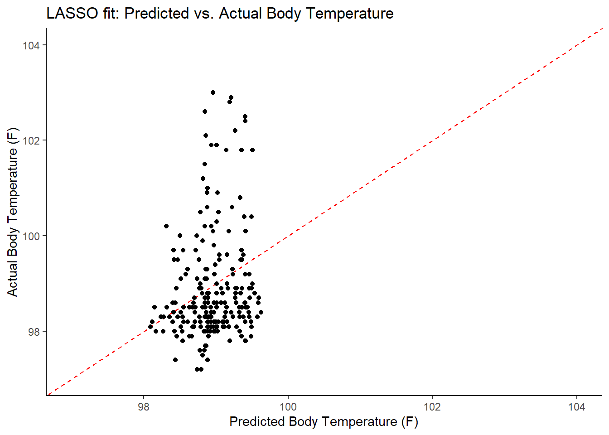
#plot model with residuals
#the geom_hline plots a straight horizontal line along which the results should fall
ggplot2::ggplot(lasso_resid_fit, aes(x = as.numeric(row.names(lasso_resid_fit)), y = .resid))+
geom_hline(yintercept = 0, color = "red", lty = 2) +
geom_point() +
labs(title = "Lasso Test Fit: Residuals",
x = "Observation Number",
y = "Residual")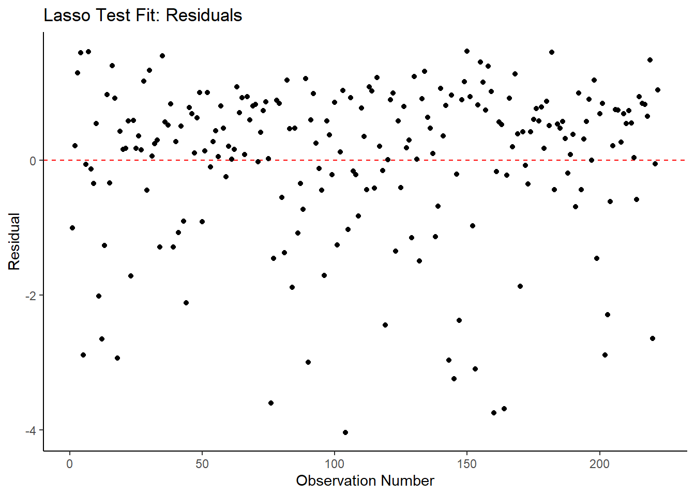
#plot model fit vs residuals
#the geom_hline plots a straight horizontal line along which the results fall
ggplot2::ggplot(lasso_resid_fit, aes(x = .pred, y = .resid))+
geom_hline(yintercept = 0, color = "red", lty = 2) +
geom_point() +
xlim(97, 104) +
labs(title = "LASSO Test Fit: Residuals vs Fitted Body Temperature",
x = "Fitted Body Temperature (F)",
y = "Residual")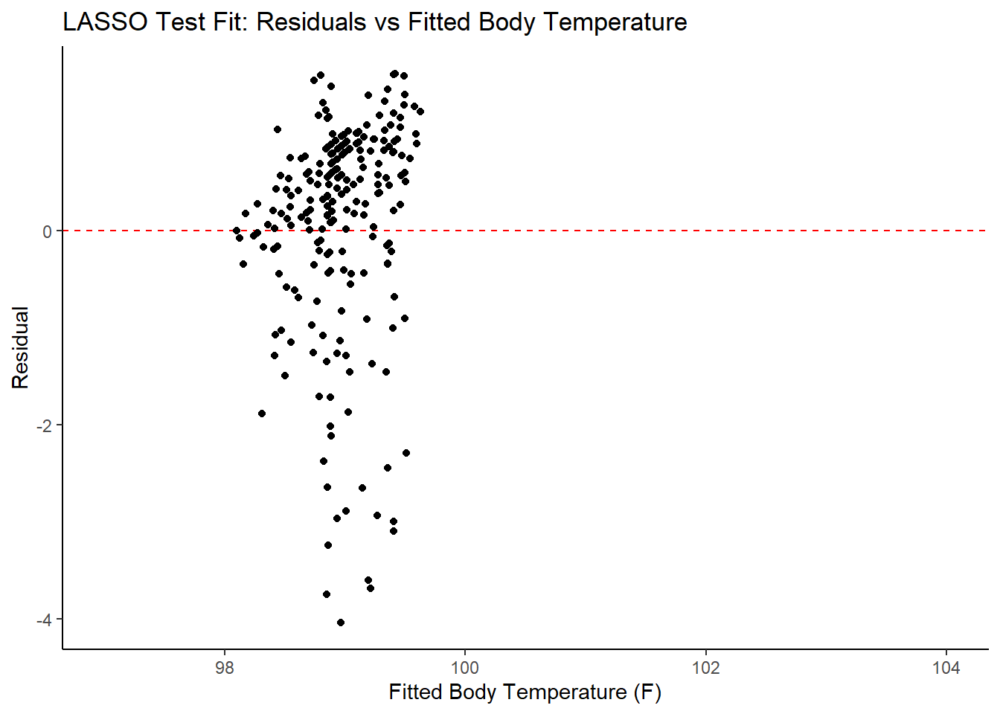
None of the models used in this analysis predict the chosen outcome (actual body temperature) all that well. There’s a variety of potential reasons for this - all of which warrant further consideration in an actual research project. Most notably, not every patient with influenza will have a fever. It would be interesting to repeat this analysis with other outcomes with which influenza typically present (e.g. cough, sore throat, myalgia, etc.).